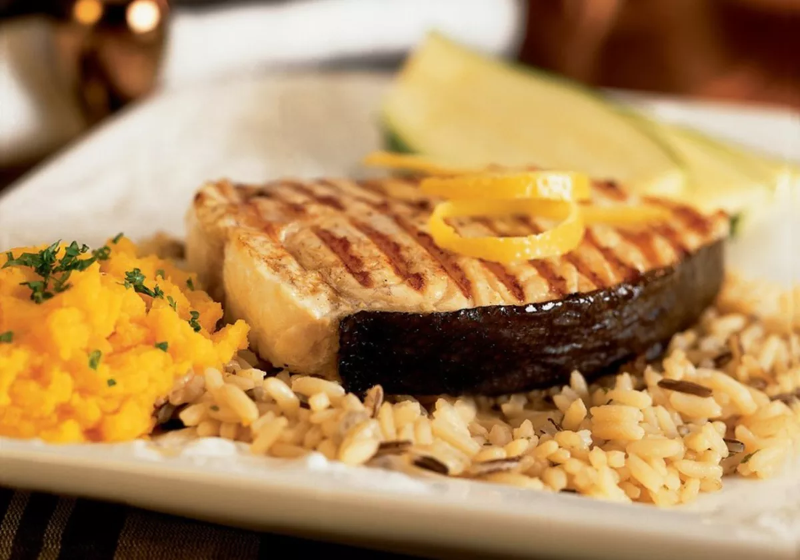

A cidade
Foz do Iguaçu é um município brasileiro localizado na região oeste do estado do Paraná. A distância
rodoviária até Curitiba, capital administrativa estadual, é de 643 quilômetros.Sua área territorial é de
617,701 km², dos quais 61,200 km² estão em perímetro urbano, e sua população, conforme o censo de 2022, é de
285 415 habitantes.
Segundo artigo publicado pela revista Exame, em março de 2014, é o terceiro destino de turistas estrangeiros
no país e o primeiro da região sul. Conhecida internacionalmente pelas Cataratas do Iguaçu, uma das
vencedoras do concurso que escolheu as 7 Maravilhas da Natureza, e pela Usina Hidrelétrica de Itaipu, a
segunda maior do mundo em tamanho e primeira em geração de energia,
que em 1996 foi considerada uma das 7 Maravilhas do Mundo Moderno pela Sociedade Americana de Engenheiros
Civis.
Foz integra uma região urbana trinacional com mais de 700 mil habitantes, constituída também por Ciudad del Este, no Paraguai,
e Puerto Iguazú, na Argentina, países com os quais faz fronteira. Iguaçu é topônimo indígena, podendo ser decomposto originalmente
em Y (água) e guazú (grande), ocorrendo, por acréscimo de uma vogal, a atual denominação. Seus moradores são designados pelo gentílico "iguaçuense".
Em 1881, Foz do Iguaçu recebeu seus dois primeiros habitantes: o brasileiro Pedro Martins da Silva e o espanhol Manuel González.
Pouco depois chegaram os irmãos Goycochéa, que iniciaram a exploração da erva-mate.
Oito anos após foi fundada a colônia militar na fronteira, marco do início da ocupação efetiva do lugar por brasileiros.
A expedição do engenheiro e tenente José Joaquim Firmino chegou a Foz do Iguaçu em julho de 1889.
Foi levantada a população e foram identificadas 324 pessoas, em sua maioria paraguaios e argentinos.
Mas havia também a presença de espanhóis e ingleses dedicados à extração da erva-mate e da madeira, exportadas via rio Paraná.
Turismo
Foz do Iguaçu recebeu o título de Capital do Turismo do Paraná, de acordo com a lei estadual nº 18
641/2015.[27]
As principais atrações da cidade são o conjunto de quedas denominadas Cataratas do Iguaçu, no Parque
Nacional do Iguaçu (Patrimônio Mundial Natural da Humanidade tombado pela UNESCO), a Hidrelétrica Binacional
de Itaipu (maior hidrelétrica do mundo em produção anual de energia),
o Marco das Três Fronteiras, a foz do rio Iguaçu no rio Paraná (área onde as fronteiras da Argentina, Brasil
e Paraguai se encontram), a Ponte Internacional da Amizade (divisa entre Brasil e Paraguai) e Ponte da
Fraternidade (divisa entre Brasil e Argentina), o Parque das Aves
(com aproximadamente 900 aves de 150 espécies), entre outras.

Gastronomia
A comida típica da cidade é o Pirá de Foz, porém o Dourado (peixe de escamas encontrado no rio Paraná) assado
faz grande sucesso na gastronomia local. Anualmente, acontece o Concurso do Dourado Assado, atraindo
milhares de pessoas.
Em Foz do Iguaçu encontram-se mais de 150 estilos de restaurantes, com variadas gastronomias, desde comida
brasileira, até culinária árabe, indiana, chinesa e inclusive os tradicionais fast foods.
A culinária libanesa recebe o seu destaque em Foz do Iguaçu, que possui vários estabelecimentos neste
segmento, com destaque para o shawarma, sanduíche feito com carne ou frango, muito apreciado por moradores e
turistas.
